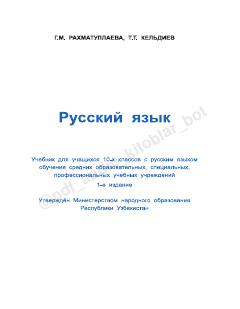

RT10-sinf o'quvchilari uchun rus tili fanidan o'quv qo'llanma va darslik.
Ushbu darslik O'zbekiston Respublikasi umumiy o'rta ta'lim maktablarining 10-sinf o'quvchilari uchun mo'ljallangan. Kitob rus tili leksikasi, fonetikasi, morfologiyasi va imlo qoidalarini tizimli ravishda yoritib beradi hamda o'quvchilarni oliy o'quv yurtlariga kirish imtihonlariga tayyorlashga yordam beradi.